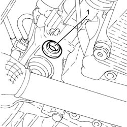
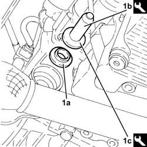

2110D62 rh differential shaft oil seal - r r with intermediate drive shaft removed
- Path
- Procedures > 21 GEARBOX UNIT > 2110 MANUAL GEARBOX WITH DIFFERENTIAL > 2110D MANUAL GEARBOX DIFFERENTIAL > 2110D62 rh differential shaft oil seal - r r with intermediate drive shaft removed
- Kind
- repair procedure (removal / refitting; the operation number is the code)
- Applies to
- all engines; all production periods
- Interactive page
- https://sloeber94.github.io/elrnDB-fDbl/en/#/2584590
Applies to: all engines; all production periods
 Removing
Removing
 Refitting
Refitting1. Remove the differential right shaft oil seal (this operation destroys it).

Applies to: all engines; all production periods
Refitting
Removing1. Place a new right differential shaft oil seal (1a) back in its housing using the tools (1b) and (1c).
 | Name | Country |
|---|---|---|
1b | Grip | 1.870.007.000 |
| Name | Country |
|---|---|---|
1c | Fitting tool | 1.870.630.000 |
